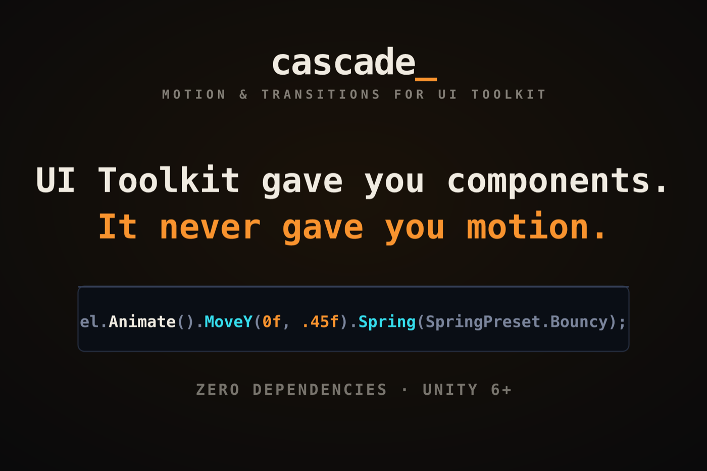
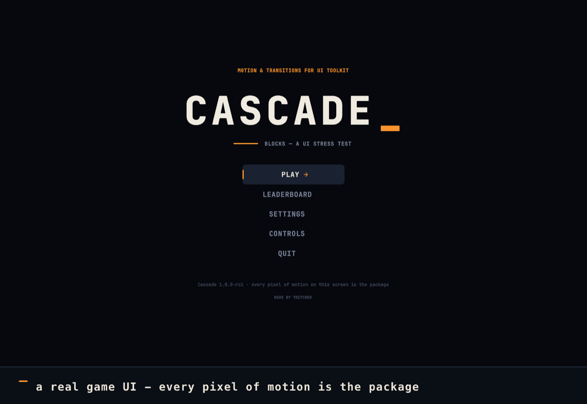
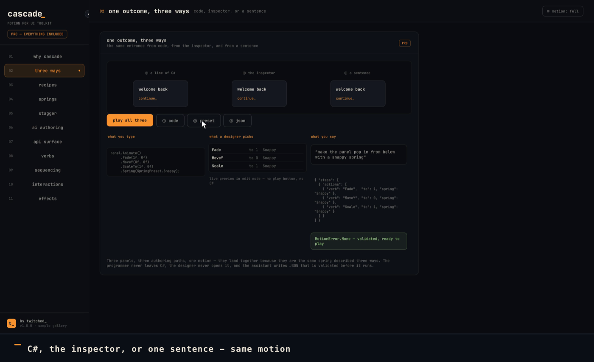

Starfall Combat HUD
An in-game overlay for a space shooter: a health bar with a delayed damage chip, screen shake, floating damage numbers, hotbar cooldowns, a wave banner and a live minimap.
read: RollHull(), TakeHit(), NextWave()
Small, sharp tools that respect your project: zero dependencies, allocation-light runtimes, real docs, and APIs designed for humans and AI assistants alike.
UI Toolkit gave you components. It never gave you motion.
Cascade is a runtime motion library for UI Toolkit (UXML/USS): physics springs that keep their velocity through an interruption, timeline sequencing, stagger, named states, enter/exit and screen transitions, and hover/press micro-interactions. Zero third-party dependencies, no native code, Unity 6000.0+.
// the whole API surface is this shape
el.Animate().MoveY(0f, .45f).Spring(SpringPreset.Bouncy);Get started Read the docs API reference

Cascade Blocks is a falling-block game with no motion code of its own. The menu stagger, the screen transitions, the line-clear sweep, the score count-up and the arcade initials caret are all the package. It exists as a stress test: motion libraries demo well on three buttons and fall apart on a real screen with a game loop competing for frames, so we built the real screen.


Real interfaces, not three buttons on a grey background: each is a complete Unity UI Toolkit scene animated with Cascade, with a short commented driver script to learn from. They ship as samples with Cascade Pro; the clips below are recorded from the scenes, not mocked up.
An in-game overlay for a space shooter: a health bar with a delayed damage chip, screen shake, floating damage numbers, hotbar cooldowns, a wave banner and a live minimap.
read: RollHull(), TakeHit(), NextWave()
An editorial storefront: products stagger in, cards lift on hover, ADD TO BAG flies a dot into the bag, and VIEW opens a detail panel on a spring.
read: AddToBag(), SelectCategory()
A listening room that moves with the music: looping meters and vinyl that pause where they stop, title crossfades on track change, and a confirmation that fades in, holds and fades out.
read: ChangeTrack(), Share(), DriftMeter()
A project dashboard: a spring drawer for new tasks, page transitions, named card states, hover feedback and a motion-mode toggle that respects reduced motion.
read: OpenDrawer(), NavigateTo(), CycleMotionMode()
Guides for animating Unity UI Toolkit with Cascade: getting started, how to animate a
VisualElement, spring animation, staggered lists, enter/exit and screen transitions, and a recipe
book. The package also ships them under Documentation~, with a Framer Motion map, a
designer workflow and an AI authoring guide.